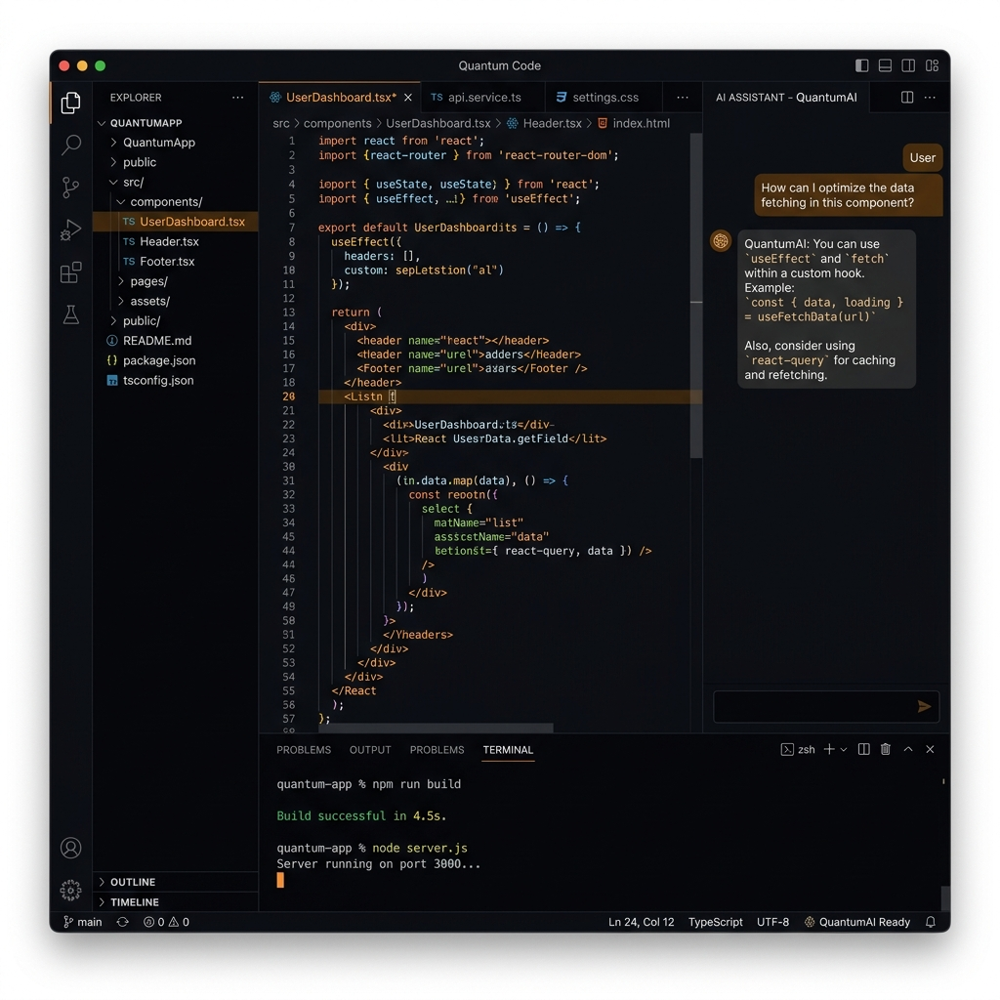

A lightweight ~7MB development environment that pairs a native PTY backend with a modern React UI — terminal, editor, file explorer, git, and AI panel all in one beautiful app.

Six essential tools — terminal, editor, file explorer, git, AI, and web preview — united in a single ~7MB native app.
GPU-accelerated xterm.js with WebGL renderer. Multi-tab terminals with background streaming — tabs stay alive when hidden.
CodeMirror 6 with 8+ language modes, Vim mode, 7 premium themes including Tokyo Night and Nord. Inline AI autocomplete built-in.
Directory tree with Catppuccin & Material icons, fuzzy search with keyboard navigation, inline rename, and context menu actions.
Stage files with checkboxes, view per-file diffs, commit with messages. Branch list with one-click switching and commit history log.
Bring Your Own Key. Multi-provider support: OpenAI, Anthropic, Google, Groq, xAI, Cerebras. Agent system with tools, slash commands, and voice input.
Sandboxed iframe with URL bar and auto-detection of local dev servers. See your changes live without leaving the editor.
One command to install. One command to launch. Everything just works.
BYOK (Bring Your Own Key) means you control the AI. No accounts, no subscriptions to us — just connect your preferred provider and go.
OpenAI, Anthropic, Google, Groq, xAI, Cerebras — or any OpenAI-compatible endpoint like LM Studio for fully local AI.
Sub-agents with tools can read files, run commands, and write code. Approval flow for dangerous operations keeps you in control.
/explain /fix /test /refactor /docs — quick AI actions at your fingertips.
Web Speech API integration for hands-free coding. Speak your commands, get AI responses.
Side-by-side diff viewer with per-hunk accept/reject. Review every AI change before it's applied.
A modern, performant stack chosen for speed, safety, and developer experience.
Your keys, your data, your machine. No exceptions.
Download Flame ADE and experience a development environment that's fast, beautiful, and respects your privacy.
flame-ade v1.1.0 · macOS · Linux · Windows · Apache-2.0